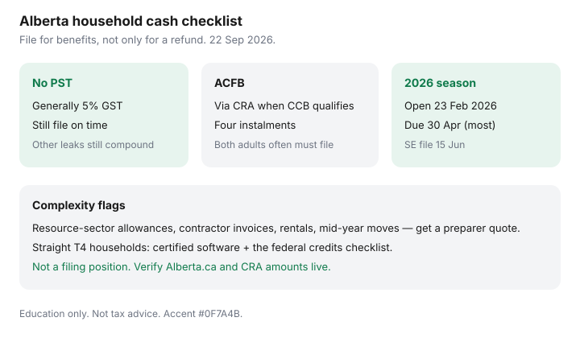

Personal Finance · Canada
Alberta Personal Tax Quirks That Affect Household Cash: Filing and Benefit Checklist
Alberta’s missing provincial sales tax is the detail every national personal-finance article remembers. The details households miss are quieter: Alberta Child and Family Benefit instalments that only continue if both adults file, resource-sector slip quirks, and cash leaks that have nothing to do with PST. This is a household cash checklist for Alberta residents — filing and benefits oriented — with CRA and Alberta figures date-stamped 22 Sep 2026. It is education, not a filing position.
Federal credit amounts many middle-aged returns skip live on the tax-credits checklist. Software versus a preparer is the cost decision. Keep slips and direct deposit in CRA My Account.
Disclosure: Tax software is an offer type. Saving Optimizer may later add partner links and does not currently claim software or preparer partnerships. Not tax, legal, or accounting advice. Confirm every amount with certified software, CRA, Alberta.ca, or a preparer. Benefit amounts index; verify the benefit year that applies to you.
Key takeaways
- No PST means purchases generally carry 5% GST only — useful, not a substitute for filing on time.
- Alberta Child and Family Benefit (ACFB) is administered by CRA and considered automatically when you qualify for the Canada Child Benefit and file.
- For the July 2026–June 2027 ACFB year, Alberta publishes base and working component maximums that rise with the number of children and reduce after income thresholds (verify the live Alberta.ca table).
- File even with low or zero taxable income if you want benefit continuity. Spouse or common-law partner filings matter for family net income tests.
- Resource-sector allowances and contractor structures are high-complexity flags — budget for a preparer when the slips stop looking like a simple T4.
No provincial sales tax context vs other cash leaks
Alberta’s lack of PST is real purchasing-power arithmetic against HST provinces. It does not stop NSF fees, package banking fees, revolving credit at 20%, or property tax. Households that celebrate “no PST” while revolving a card are solving the wrong line. Put the sales-tax advantage in the grocery and services budget, then attack the leaks that compound: bank packages (waive or leave), on-time credit habits, and a refund that gets a job (refund checklist).

Alberta-specific credits/benefits to verify at draft
Alberta Child and Family Benefit (ACFB), per Alberta.ca (used 22 Sep 2026): direct assistance for lower- and middle-income families with children under 18; not taxable; administered by CRA; paid in four instalments; automatic consideration when you file and qualify for the federal Canada Child Benefit. The published table for July 2026–June 2027 shows, for example, a one-child base component maximum of $1,529 and working component maximum of $782, scaling up with more children, with reductions once family net income exceeds the thresholds Alberta lists (including figures around $28,116 and $47,115 on that page). Treat the table as a verify-live artifact — legislatures and indexation move.
Federal benefits still matter in Alberta the same way: Canada Child Benefit, Canada Groceries and Essentials Benefit (the GST/HST-credit successor naming on CRA pages in 2026 materials), Canada workers benefit where eligible. CRA’s child-and-family overview is clear: keep filing every year even with no income, keep personal information updated, and keep both spouses’ returns in the family net income math.
Resource-sector income quirks at high level
Oilfield, construction, and camp work often produce ordinary T4 employment income plus allowances, travel, or contractor invoices. Living-out allowances, overtime patterns, and corporation-versus-employee questions change both withholding and what software can safely auto-claim. This page will not invent a deduction. It will say: if your year includes a mix of T4, T4A, invoices, and reimbursements, get a written preparer quote early — March panic costs more than a January engagement. Moving between provinces mid-year also splits provincial tax; Alberta residency on 31 December is the usual provincial-tax anchor, with nuances a preparer should walk through.
Filing checklist for Alberta residents
- Open or unlock CRA My Account; confirm direct deposit and marital status.
- Collect T4/T4A/T5/T3 slips; do not file the week slips are still arriving (CRA notes online filing for the 2025 return season opens 23 February 2026).
- Deadline map: most filers 30 April 2026; self-employed filing 15 June 2026; balances owing still due 30 April.
- Run federal credits from the middle-aged checklist; do not skip medical or donation carry-forwards.
- Confirm ACFB / CCB eligibility after you file; watch CRA My Account for benefit statements.
- If the year is messy (rental, business, resource allowances), stop typing and get a quote.
Benefit applications that affect monthly cash
CCB and ACFB are monthly/instalment cash, not a spring surprise. A late return can interrupt payments. A separation, a child turning 18, or a move must be updated with CRA or benefits overpay and claw back. The Canada Groceries and Essentials Benefit pays quarterly on the CRA schedule for the benefit year — budget it as irregular income, not as rent money you spend in advance. Provincial programs outside CRA (utilities rebates, temporary affordability cheques) appear and sunset; treat social-media screenshots as leads to verify on Alberta.ca, not as filing instructions.
| Item | Why it changes cash | Action |
|---|---|---|
| No PST / 5% GST | Lower sales tax on many purchases vs HST provinces | Budget the gap; do not ignore income-tax filing |
| ACFB | Quarterly instalments via CRA | File on time; both adults file when family income is tested |
| CCB / CGEB | Monthly or quarterly federal benefits | Update address and custody; file every year |
| Resource-sector slips | Withholding and deduction complexity | Preparer quote when not a plain T4 |
When to use software vs a preparer
Straight T4, maybe a small donation and medical cluster: certified NETFILE software is usually enough — CRA’s 2026 season tip sheet cites the online window opening 23 February 2026 through the usual late-January next-year NETFILE end on related software guides. Add a rental property, a corporation, repeated moving claims, or camp/allowance puzzles, and pay for a written quote. Alberta’s tax story is simpler than Québec’s two-return world, but “simple province” is not the same as “simple file.”
Sources & date stamps
- CRA, What you need to know for the 2026 tax-filing season — 23 Feb open; 30 Apr / 15 Jun deadlines (used 22 Sep 2026).
- Alberta.ca, Alberta Child and Family Benefit — automatic CRA administration; 2026–27 component table (used 22 Sep 2026).
- CRA, Overview of child and family benefits — file every year; update personal information (used 22 Sep 2026).
- Alberta no-PST / 5% GST context — standard provincial sales-tax framing (used 22 Sep 2026).
Frequently asked questions
Does Alberta have a provincial sales tax?
No. Alberta residents generally pay the federal 5% GST on taxable purchases without a provincial sales tax. That changes grocery and services cashflow versus provinces with PST or HST — it does not replace income-tax planning or benefit filing.
Do I need to apply separately for the Alberta Child and Family Benefit?
Alberta’s ACFB page says you are automatically considered when you file and qualify for the Canada Child Benefit. CRA administers ACFB. Filing on time still matters even if you expect no tax owing.
What filing deadline should Alberta households watch for 2025 returns?
CRA’s 2026 filing-season materials: most individuals file 2025 returns by 30 April 2026; self-employed filing deadline 15 June 2026 with amounts owing still due 30 April. Online filing for the season opens 23 February 2026 on CRA’s tip sheet.
Are Alberta resource-sector workers taxed differently at a high level?
Employment income is still employment income. Complexity shows up in travel allowances, camps, living-out allowances, and self-employment or contractor structures common in the sector. Those are preparer conversations — this page flags the pattern, not a filing position.
When should Albertans pay for a preparer instead of software?
When the year includes a rental, a side business, significant moving expenses, cross-border work, or messy resource-sector slips. Straight T4 households often NETFILE with certified software. See the software versus accountant guide.